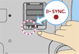

Pour jouer en utilisant la Wii Balance Board, suivez les étapes décrites ci-dessous :
Si la Wii Balance Board a été synchronisée en mode standard :
Tu peux utiliser la Wii Balance Board en plus de la télécommande Wii pour contrôler ton singe dans tous les modes Un joueur.
Pour activer la Wii Balance Board, utilise l'icône de Wii Balance Board située en haut de tous les écrans de menus Un joueur et suis les instructions à l'écran.
Note : Si vous remarquez un dysfonctionnement en cours de jeu, communiquez avec le service à la clientèle de Nintendo au 1 800 255-3700 ou visitez le site support.nintendo.com.
Avant que la manche ne commence, il te sera demandé de calibrer la Wii Balance Board. Suis alors à nouveau les instructions à l'écran. Une fois le calibrage terminé, reste bien sur la Wii Balance Board jusqu'à la fin de la manche. Le processus de calibrage devra sinon recommencer.
En cours de jeu, selon la manière dont tu te penches sur la Wii Balance Board, ton singe esquivera dans la même direction que toi.
Si la Wii Balance Board n'a pas été synchronisée en mode standard :
- Lorsque l'écran ci-contre s'affiche, retirez le couvercle des piles à l'arrière de la Wii Balance Board et maintenez
 enfoncé.
enfoncé.

Le témoin lumineux de la Wii Balance Board commencera alors à clignoter.
- Lorsque vous retirez le couvercle des piles, faites attention à ne pas échapper la Wii Balance Board sur vos pieds et à ne pas vous pincer les doigts.
- Assurez-vous d'insérer les piles correctement dans la Wii Balance Board.
- Lorsque le témoin lumineux commence à clignoter, relâchez .

- Ouvrez la fente carte SD à l'avant de la console Wii et appuyez sur
 pendant que le témoin lumineux de la Wii Balance Board clignote. Le témoin lumineux cessera de clignoter et s'allumera une fois la synchronisation en mode standard réussie.
pendant que le témoin lumineux de la Wii Balance Board clignote. Le témoin lumineux cessera de clignoter et s'allumera une fois la synchronisation en mode standard réussie.
- Une fois la synchronisation terminée, replacez le couvercle des piles sur la Wii Balance Board et fermez le couvercle de la fente carte SD de la console Wii.
 |
 |
 |
 |
- Une seule Wii Balance Board peut être synchronisée avec une console Wii à la fois. Jusqu'à 10 manettes Wii Remote et autres accessoires peuvent être synchronisés avec une console en même temps en utilisant la synchronisation en mode standard. Si vous tentez de synchroniser plus de manettes Wii Remote ou d'accessoires, les données de la manette la plus ancienne seront remplacées, mais celles de la Wii Balance Board seront conservées.
- La Wii Balance Board ne peut être synchronisée qu'avec une seule console à la fois en utilisant la synchronisation en mode standard. Vous devrez répéter la synchronisation chaque fois que vous changez la console avec laquelle vous voulez synchroniser la Wii Balance Board.
- La Wii Balance Board utilise la connexion du joueur 4 (J4). Si une manette Wii Remote est activée en tant que J4, cette manette sera déconnectée lors de l'utilisation de la Wii Balance Board.
|
 |
 |
 |
 |